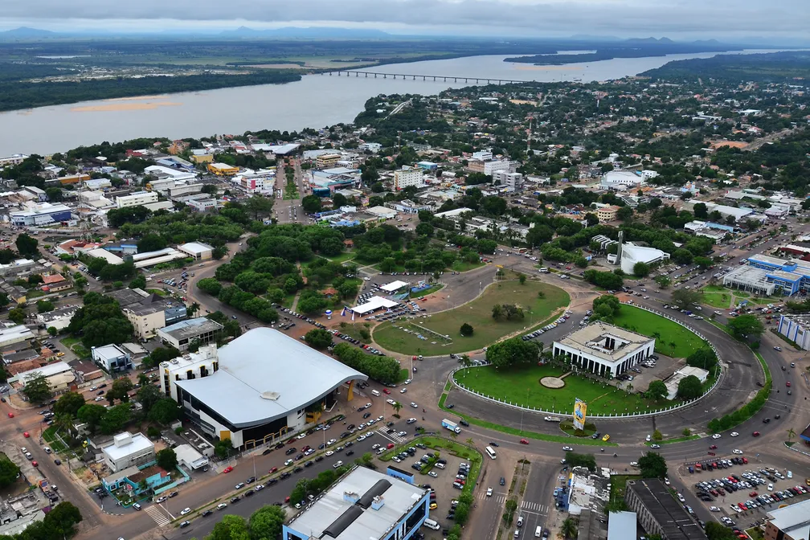

Tocantins é um estado localizado na região Norte do Brasil, criado em 1988, com sua capital em Palmas. É uma região de transição entre o cerrado e a Amazônia, com uma paisagem predominantemente de planaltos e áreas de cerrado. A economia de Tocantins é baseada na agricultura, na pecuária e na mineração, com destaque para a produção de soja, milho, algodão e carne bovina. O estado também possui um potencial turístico, com atrações naturais como rios, cachoeiras e parques, além de uma cultura rica e diversificada. Tocantins é uma região em desenvolvimento, com forte crescimento econômico e uma identidade única dentro do Brasil.
 Voltar